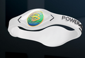

| Power Balance, avagy a Bûvös karkötõ... |
|

Két kaliforniai testvér, Troy és Josh Rodarmel kitalált egy bûvös karkötõt, amelynek divatja futótûzként terjed.
A testvérek, akik szenvedélyes szörfözõk, eredetileg a sporttársak részére készítették el a Power Balance névre keresztelt karkötõt,
amely hasonlít azokhoz a kis reklám órákhoz, amelyekben folyékony kristályos mikrodisplay mûködik. A Rodarmelek szerint az óra javítja viselõjének
egyensúlyérzékét, erejét, hajlékonyságát. |
|
A honlapjukon (www.powerbalance.net) "technológiai performance"-ról beszélnek
és annyit elárulnak, hogy szilikonba ágyazott két hologrammba vannak beleillesztve a frekvenciák, amelyek képesek hatni a test energetikai terére.
A szerkentyûben, úgy tûnik, sokan bíznak, mert már egy millió példány talált gazdára. |